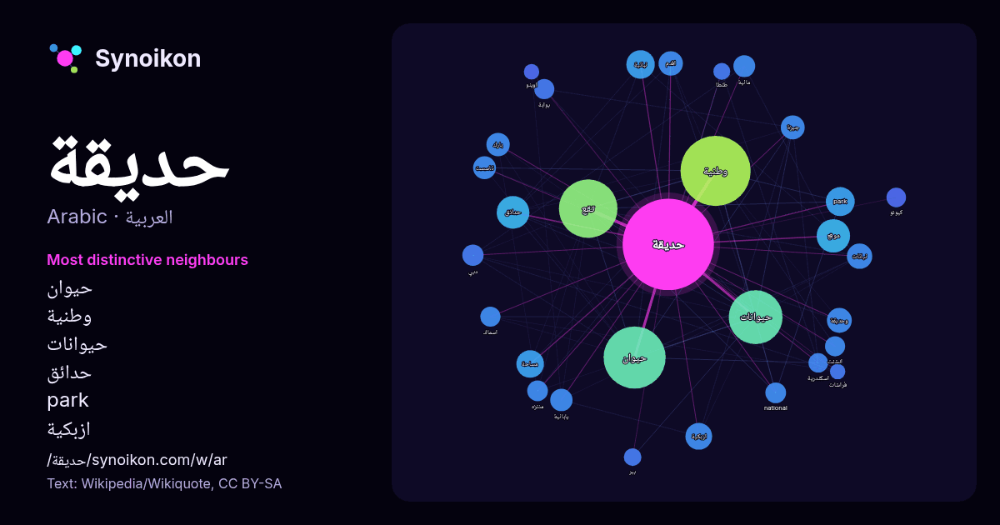

العربية · قائمة كلمات اليوم
حديقة
“garden” · الكلمات الموجودة حولها في 1429 ورودًا من ويكيبيديا, Wikiquote.

الجيران الأكثر تميّزًا
- حيوان 107×
- وطنية 52×
- حيوانات 51×
- حدائق 35×
- park 35×
- ازبكية 31×
- نباتية 28×
- وحديقة 26×
- تقع 24×
- جيزة 23×
- national 18×
- بارك 17×
- كيوتو 16×
- منتزه 16×
- اقدم 15×
- انشئت 15×
- دبي 14×
- مائية 14×
- ببر 14×
- بوابة 13×
× = كم مرة أكثر مما في نصوص ويكيبيديا العامة.
الجيران الأكثر تكرارًا
- وطنية 207
- حيوان 162
- تقع 144
- حيوانات 122
- مدينة 57
- موقع 47
- حدائق 45
- اكبر 36
- park 35
- نباتية 34
- مساحة 32
- ازبكية 30
- منطقة 29
- نباتات 27
- وحديقة 26
- اقدم 25
- جيزة 24
- بارك 23
- دولية 23
- تاسست 22
في السياق
- قد يقصد بـ «حديقة» مايلي: حديقة منزلية حديقة أو منتزه حديقة وطنية أو منتزه وطني حديقة ورد أو بستان الحديقة إحدى قرى محافظة سوهاج في مصر هذه صفحة توضيح Wikipedia snippets · حديقة (توضيح)
- حديقة حيوان الجيزة أو جنينة الحيوانات في الجيزة تأسست سنة 1891 م. هي أكبر حديقة للحيوانات في مصر والشرق الأوسط، وأول وأعرق حدائق الحيوانات في أفريقيا Wikipedia snippets · حديقة حيوان الجيزة
- حديقة الملك سلمان، إحدى مشاريع الرياض الكبرى، وهي منطقة حضرية يجري تطويرها في مدينة الرياض بالمملكة العربية السعودية وتشرف عليها "مؤسسة حديقة الملك سلمان"، Wikipedia snippets · حديقة الملك سلمان
- حديقة الرضوان، ويُطلق عليها أيضًا حديقة النجيبية، هي حديقةٌ مشجرةٌ في ما يعرف الآن بمنطقة الرصافة ببغداد، على ضفاف نهر دجلة، وهو المكان الذي أقام فيه Wikipedia snippets · حديقة الرضوان (بغداد)
- بوابة فيتو - حي مصر الجديدة: تطوير حديقة الميريلاند قريبا نسخة محفوظة 18 يونيو 2016 على موقع واي باك مشين تاريخ حديقة المريلاند نسخة محفوظة 21 أكتوبر 2016 Wikipedia snippets · حديقة المريلاند
- حديقة ماجوريل (باللغة الأمازيغية: ⵓⵔⵜⵉ ⵎⴰⵊⵓⵔⵉⵍ) هي محمية نباتية وواحدة من أهم المعالم والمواقع السياحية لمدينة مراكش بمعدل 600 ألف زائر سنويًا، ترجع تسميتها Wikipedia snippets · حديقة ماجوريل
- حديقة المرح (الإنجليزية: In the Night Garden) (تترجم حرفيا: في حديقة الليل) هو مسلسل تلفزيوني من إنتاج شبكة بي بي سي البريطانية، انتج المسلسل للأطفال لمن Wikipedia snippets · حديقة المرح
- حديقة القصر أو حديقة الخديوي أو حديقة النادي السياسي أو بارك حلوان (الإنجليزية: Al Qasr Garden) هي إحدى حدائق القاهرة الكبرى التاريخية حيث انشئت في عهد Wikipedia snippets · حديقة القصر
كلمات أخرى
- أغنية
- إله
- تاريخ
- جبل
- جرس
- جزيرة
- جسر
- حصان
- حقيقة
- حياة
- خبز
- خريطة
- خريف
- ذهب
- زمن
- ساعة
- شاي
- شتاء
- صحة
- صحراء
- صمت
- صيف
- طبيعة
- طريق
- طعام
- ظل
- عائلة
- عاصفة
- عسل
- علم
- عمل
- غابة
- فن
- قطار
- قطة
- قلب
- قوة
- كلب
- لغة
- ماء
- مال
- مدينة
- مرآة
- مطر
- ملح
- مناخ
- موت
- نجم
- والدة
حُسبت مسبقًا في 2026-10-09 بالإعدادات الافتراضية (±5 كلمات، مدوّنة متوسطة). يمكن للخريطة التفاعلية تحديثها ببيانات حية.
واجهة مترجمة آليًا؛ نرحب بالتصحيحات.